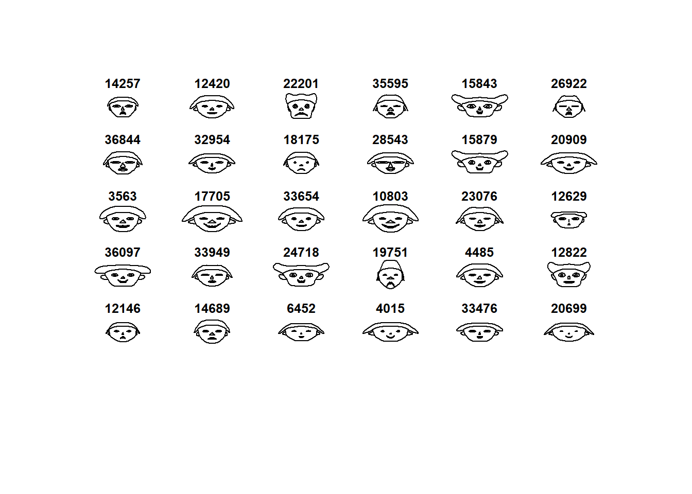
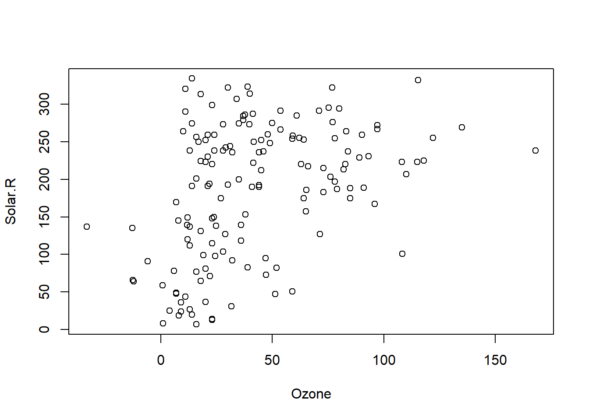
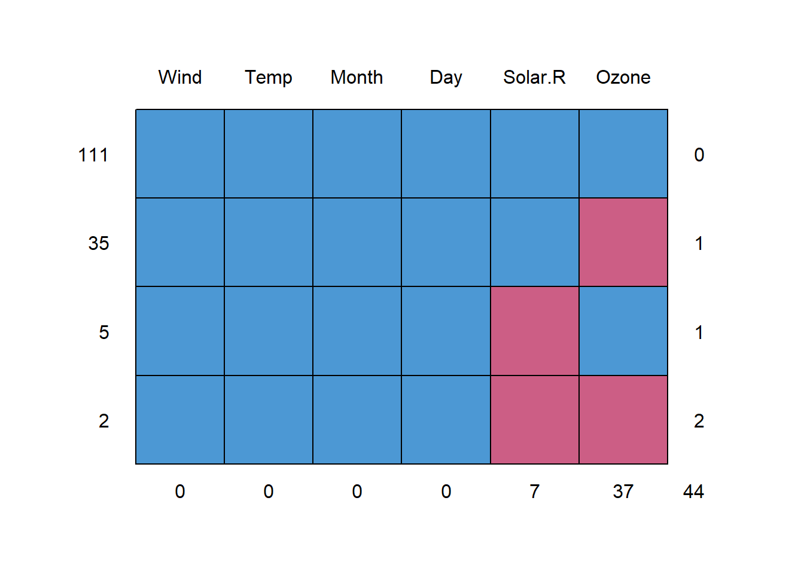

1 Minería de Datos
1.1 Motivación para la Minería de datos
- (Variedad) Los métodos de recolección de datos han evolucionado muy rápidamente.
- (Volumen) Las bases de datos han crecido exponencialmente
- (Usuarios) Estos datos contienen información útil para las empresas, países, etc.
- (Tecnología) El tamaño hace que la inspección manual sea casi imposible
- (Método) Se requieren métodos de análisis de datos automáticos para optimizar el uso de estos enormes conjuntos de datos
1.2 ¿Qué es la minería de datos?
Es el análisis de conjuntos de datos (a menudo grandes) para encontrar relaciones insospechadas (conocimiento) y resumir los datos de formas novedosas que sean comprensibles y útiles para el propietario/usuario de los datos.
Principles of Data Mining (Hand et.al. 2001)
1.3 Datos y conocimiento (Insumo/Resultado)
1.3.1 Datos:
- se refieren a instancias únicas y primitivas (single objetos, personas, eventos, puntos en el tiempo, etc.)
- describir propiedades individuales
- a menudo son fáciles de recolectar u obtener (por ejemplo, cajeros de escáner, internet, etc.)
- no nos permiten hacer predicciones o pronósticos
Ejercicio:
Elija un sector/área y describa los potenciales datos que se tienen disponibles
- Salud (Hospital): Registros de pacientes, medicamentos, vacunas, fichas epidemiológicas, personal médico, consultorios (infraestructura), financiera
- (Seguridad) Feminicidios: Casos, lugar, entorno familiar, denuncias previas, sospechosos, información forense, Caracterizar al culpable
- (Seguridad) Feminicidios: Casos, lugar, entorno familiar, denuncias previas, sospechosos, información forense, Caracterizar al culpable
- Banca: Prestamos; ingresos, laboral. Caja de ahorro; personal, movimientos. Cajas; Servicios, etc. Cajeros; Lugar, movimientos. Clientes; Prestamistas; Deuda, mora, juicio, ahorristas. Base de datos de patrimonio
- Geografía: Clima; Lluvia, Minas; tipo, trabajadores, cultivos; tipo, temporada, tipo suelo, montañas, pluvial, temperatura.
1.3.2 Conocimiento:
- (Características) se refiere a clases de instancias (conjuntos de …)
- (Forma) describe patrones generales, estructuras, leyes,
- (Declaración) consta de la menor cantidad de declaraciones posibles
- (Proceso) a menudo es difícil y lleva mucho tiempo encontrar u obtener
- (Acciones) nos permite hacer predicciones y pronósticos
Ejercicio:
- Agrupar la tipología de los pacientes; Mejorar servicio, acciones
- Determinantes del feminicidio; SLIM, medidas
- Relación el monto del ingreso con el motivo de préstamo; Realizar ofertas, promocionar a clientes.
- Relación entre el clima y los cultivos, dado el tipo de mineral se puede pensar en un mercado posterior
1.4 Requerimientos
- Disponibilidad para aprender
- Mucha paciencia
- Interactúa con otras áreas
- Preprocesamiento de datos
- Creatividad
- Rigor, prueba y error

1.6 Preparación de los datos
1.6.1 Recopilación
- Instituto de Estadística
- UDAPE, ASFI
- Ministerio Salud (SNIS), Ministerio de educación (SIE)
- APIs, Twitter, Facebook, etc.
- Kaggle
- Banco Mundial, UNICEF, FAO, BID (Open Data)


1.6.4 Importación
library(foreign)
library(readr)
apropos("read")
getwd()
setwd("C:\\Users\\ALVARO\\Downloads\\bd49 (1)\\Base EH2019")
dir()
eh19v<-read.spss("EH2019_Vivienda.sav",to.data.frame = T)
eh19p<-read.spss("EH2019_Persona.sav",to.data.frame = T)
object.size(eh19p)/10^6
#exportación de datos
setwd("C:\\Users\\ALVARO\\Documents\\GitHub\\EST-384\\data")
save(eh19p,eh19v,file="eh19.RData")
# cargando la base de datos que acabamos de guardar
rm(list=ls())
load("eh19.RData")
load("oct20.RData")
# cargando desde github
rm(list=ls())
load(url("https://github.com/AlvaroLimber/EST-384/raw/master/data/eh19.RData"))
load(url("https://github.com/AlvaroLimber/EST-384/raw/master/data/oct20.RData"))1.6.5 Recopilación
read.table("clipboard",header = T)
library(readxl) # excel
library(DBI) # Bases de datos relacionales en el sistema
#library(help=DBI)
library(RMySQL) # bases de datos en mysql
# web scraping (API)
library(gtrendsR) # API
gg<-gtrends(c("data mining","machine learning"),time="today 12-m")
gg$interest_over_time
plot(gg)
gg<-gtrends(c("data mining","machine learning"),time="today 12-m",geo="BO")1.6.6 Limpieza
std<-data.frame(name=c("ana","juan","carla"),math=c(86,43,80),stat=c(90,75,82))
std## name math stat
## 1 ana 86 90
## 2 juan 43 75
## 3 carla 80 82library(tidyr)
bd<-gather(std,materia,nota,math:stat)
bd## name materia nota
## 1 ana math 86
## 2 juan math 43
## 3 carla math 80
## 4 ana stat 90
## 5 juan stat 75
## 6 carla stat 82# otra opción más relacionada a bases de datos con información de tiempo,
# es el comando reshape1.6.7 Ejercicio (reshape)
http://www.udape.gob.bo/portales_html/dossierweb2019/htms/CAP07/C070311.xls
1.6.8 Limpieza (fechas)
library(lubridate)
date()## [1] "Mon Aug 1 19:01:37 2022"today()## [1] "2022-08-01"ymd("20151021")## [1] "2015-10-21"ymd("2015/11/30")## [1] "2015-11-30"myd("11.2012.3")## [1] "2012-11-03"dmy_hms("2/12/2013 14:05:01")## [1] "2013-12-02 14:05:01 UTC"mdy("120112")## [1] "2012-12-01"d1<-dmy("15032020")
class(d1)## [1] "Date"#ts()1.6.9 Limpieza (String)
toupper("hola")## [1] "HOLA"tolower("HOLA")## [1] "hola"abc<-letters[1:10]
toupper(abc)## [1] "A" "B" "C" "D" "E" "F" "G"
## [8] "H" "I" "J"tolower("Juan")## [1] "juan"# Extraer partes de un texto
substr("hola como estan",1,3)## [1] "hol"substr("hola como estan",3,7)## [1] "la co"# contar la cantidad de caracteres
nchar("hola")## [1] 4nchar(c("hola","chau","LA paz"))## [1] 4 4 30x<-c("LA-.paz","La Paz", "La pas", "La paz","lapaz","la 78 paz")
x<-toupper(x)
x<-gsub("PAS","PAZ",x)
library(tm)
x<-removeNumbers(x)
x<-removePunctuation(x)
x<-gsub("LAPAZ","LA PAZ",x)
x<-stripWhitespace(x)
nchar(x)## [1] 6 6 6 6 6 6nchar(gsub(" "," ",x))## [1] 6 6 6 6 6 6gsub("a","x","hola como estas")## [1] "holx como estxs"grepl("a",c("hola","como"))## [1] TRUE FALSEgrepl("o",c("hola","como"))## [1] TRUE TRUE#otra alternativa
x<-c("LA-.paz","La Paz", "La pas", "La paz","lapaz","la 78 paz")
x<-toupper(x)
x[grepl("PAZ",x)]<-"LA PAZ"
x<-gsub("PAS","PAZ",x)
# para llevar a ascii
utf8ToInt("la paz")## [1] 108 97 32 112 97 122utf8ToInt("@")## [1] 64library(stringi)Ejemplo de web scraping sobre la página https://www.worldometers.info/
library(rvest)
url<-"https://www.worldometers.info/coronavirus/"
covid<-read_html(url)
bdcov<-html_table(covid)
bdnow<-bdcov[[1]]
str(bdnow)## tibble [246 × 22] (S3: tbl_df/tbl/data.frame)
## $ # : int [1:246] NA NA NA NA NA NA NA NA 1 2 ...
## $ Country,Other : chr [1:246] "North America" "Asia" "Europe" "South America" ...
## $ TotalCases : chr [1:246] "110,499,104" "170,218,328" "215,684,754" "62,298,715" ...
## $ NewCases : chr [1:246] "+17,094" "+323,057" "+67,874" "+30,500" ...
## $ TotalDeaths : chr [1:246] "1,504,922" "1,448,481" "1,877,696" "1,316,172" ...
## $ NewDeaths : chr [1:246] "+53" "+310" "+420" "+187" ...
## $ TotalRecovered : chr [1:246] "103,321,710" "161,814,212" "205,992,353" "59,364,292" ...
## $ NewRecovered : chr [1:246] "+48,718" "+309,148" "+466,980" "+22,869" ...
## $ ActiveCases : chr [1:246] "5,672,472" "6,955,635" "7,814,705" "1,618,251" ...
## $ Serious,Critical : chr [1:246] "9,927" "12,468" "7,988" "10,542" ...
## $ Tot Cases/1M pop : chr [1:246] "" "" "" "" ...
## $ Deaths/1M pop : chr [1:246] "" "" "" "" ...
## $ TotalTests : chr [1:246] "" "" "" "" ...
## $ Tests/1M pop : chr [1:246] "" "" "" "" ...
## $ Population : chr [1:246] "" "" "" "" ...
## $ Continent : chr [1:246] "North America" "Asia" "Europe" "South America" ...
## $ 1 Caseevery X ppl : chr [1:246] "" "" "" "" ...
## $ 1 Deathevery X ppl : chr [1:246] "" "" "" "" ...
## $ 1 Testevery X ppl : int [1:246] NA NA NA NA NA NA NA NA NA 2 ...
## $ New Cases/1M pop : chr [1:246] "" "" "" "" ...
## $ New Deaths/1M pop : num [1:246] NA NA NA NA NA NA NA NA NA NA ...
## $ Active Cases/1M pop: chr [1:246] "" "" "" "" ...Tarea: limpiar la base de datos
- Convertir las variables necesarias a numéricas
- Debe ser una base de solo países
1.6.10 Transformación
load(url("https://github.com/AlvaroLimber/EST-384/raw/master/data/eh19.RData"))
names(eh19p)## [1] "folio"
## [2] "depto"
## [3] "area"
## [4] "nro"
## [5] "s02a_02"
## [6] "s02a_03"
## [7] "s02a_04a"
## [8] "s02a_04b"
## [9] "s02a_04c"
## [10] "s02a_05"
## [11] "s02a_06a"
## [12] "s02a_06b"
## [13] "s02a_06c"
## [14] "s02a_06d"
## [15] "s02a_06e"
## [16] "s02a_06_b"
## [17] "s02a_07_1"
## [18] "s02a_07_2"
## [19] "s02a_07_3"
## [20] "s02a_08"
## [21] "s02a_10"
## [22] "s03a_01a"
## [23] "s03a_01b"
## [24] "s03a_01c"
## [25] "s03a_01d"
## [26] "s03a_01d2_cod"
## [27] "s03a_01e"
## [28] "s03a_02"
## [29] "s03a_02e"
## [30] "s03a_03"
## [31] "s03a_03a"
## [32] "s03a_04"
## [33] "s03a_04npioc"
## [34] "s04a_01a"
## [35] "s04a_01b"
## [36] "s04a_01e"
## [37] "s04a_02a"
## [38] "s04a_02b"
## [39] "s04a_02e"
## [40] "s04a_03a"
## [41] "s04a_03b"
## [42] "s04a_03c"
## [43] "s04a_03d"
## [44] "s04a_03e"
## [45] "s04a_03f"
## [46] "s04a_03g"
## [47] "s04a_04a"
## [48] "s04a_04b"
## [49] "s04a_04e"
## [50] "S04A_0"
## [51] "S04A_1"
## [52] "S04A_2"
## [53] "s04a_05a"
## [54] "s04a_05b"
## [55] "s04a_05c"
## [56] "s04a_05d"
## [57] "s04a_05e"
## [58] "s04a_06a"
## [59] "s04a_07a"
## [60] "s04a_07a_e"
## [61] "s04a_06b"
## [62] "s04a_07b"
## [63] "s04a_07b_e"
## [64] "s04a_06c"
## [65] "s04a_07c"
## [66] "s04a_07c_e"
## [67] "s04a_06d"
## [68] "s04a_07d"
## [69] "s04a_07d_e"
## [70] "s04a_06e"
## [71] "s04a_07e"
## [72] "s04a_07e_e"
## [73] "s04a_06f"
## [74] "s04a_07f"
## [75] "s04a_07f_e"
## [76] "s04a_06g"
## [77] "s04a_07g"
## [78] "s04a_07g_e"
## [79] "s04a_08"
## [80] "s04a_08a1"
## [81] "s04a_08a2"
## [82] "s04a_08b"
## [83] "s04a_09"
## [84] "s04a_09a"
## [85] "s04b_11a"
## [86] "s04b_11b"
## [87] "s04b_12"
## [88] "s04b_13"
## [89] "s04b_14a"
## [90] "s04b_14b"
## [91] "s04b_15"
## [92] "s04b_15e"
## [93] "S04B_9"
## [94] "S04B_A"
## [95] "S04B_B"
## [96] "s04b_16"
## [97] "s04b_16e"
## [98] "S04B_6"
## [99] "S04B_7"
## [100] "S04B_8"
## [101] "s04b_17"
## [102] "s04b_17e"
## [103] "S04B_3"
## [104] "S04B_4"
## [105] "S04B_5"
## [106] "s04b_18"
## [107] "s04b_18e"
## [108] "S04B_0"
## [109] "S04B_1"
## [110] "S04B_2"
## [111] "s04b_19"
## [112] "s04b_20a1"
## [113] "s04b_20a2"
## [114] "s04b_20b"
## [115] "s04b_21a"
## [116] "s04b_21b"
## [117] "s04b_21b2"
## [118] "s04c_22"
## [119] "s04c_23"
## [120] "s04d_24"
## [121] "s04d_25"
## [122] "s04d_26"
## [123] "s04d_27a"
## [124] "s04d_27b"
## [125] "s04e_28a"
## [126] "s04e_28b"
## [127] "s04e_29a"
## [128] "s04e_29b"
## [129] "s04e_30a"
## [130] "s04e_30b"
## [131] "s04e_30c_cod"
## [132] "s04e_31a"
## [133] "s04e_31b"
## [134] "s04e_31c"
## [135] "s04e_31d"
## [136] "s04e_31e"
## [137] "s04e_31f"
## [138] "s04e_31_e"
## [139] "s04e_32a"
## [140] "s04e_32b"
## [141] "s04e_33a"
## [142] "s04e_33b"
## [143] "s04_e_34a"
## [144] "s04f_34"
## [145] "s04f_35a"
## [146] "s04f_35b"
## [147] "s04f_35c"
## [148] "s04f_35e"
## [149] "s05a_01"
## [150] "s05a_01a"
## [151] "s05a_02a"
## [152] "s05a_02c"
## [153] "s05a_03a"
## [154] "s05a_03c"
## [155] "s05a_04"
## [156] "s05a_05"
## [157] "s05a_05_e"
## [158] "s05a_06a"
## [159] "s05a_06c"
## [160] "s05a_07a"
## [161] "s05a_07b"
## [162] "s05a_08"
## [163] "s05a_09"
## [164] "s05b_10"
## [165] "s05b_11"
## [166] "s05b_11_e"
## [167] "s05b_11a"
## [168] "s05c_13a"
## [169] "s05c_13b"
## [170] "s05c_13c"
## [171] "s05c_13d"
## [172] "s05c_13e"
## [173] "s05c_13f"
## [174] "s05c_13g"
## [175] "s05c_13h"
## [176] "s05c_13_e"
## [177] "s05c_14a"
## [178] "s05c_14b"
## [179] "s05c_15a"
## [180] "s05c_15b"
## [181] "s05d_17"
## [182] "s05d_18"
## [183] "s05d_19a"
## [184] "s05d_19b"
## [185] "s05d_20a"
## [186] "s05d_20b"
## [187] "s05d_21a"
## [188] "s05d_21b"
## [189] "s05d_21e"
## [190] "s05d_22a"
## [191] "s05d_22b"
## [192] "s05d_22c"
## [193] "s05d_22d"
## [194] "s05d_22e"
## [195] "s05d_22f"
## [196] "s05d_22g"
## [197] "s05d_22h"
## [198] "s05d_22i"
## [199] "s05d_22j"
## [200] "s05d_22k"
## [201] "s05d_22l"
## [202] "s05d_22_e"
## [203] "s06a_01"
## [204] "s06a_02"
## [205] "s06a_03"
## [206] "s06a_04"
## [207] "s06a_05"
## [208] "s06a_06aa"
## [209] "s06a_06ab"
## [210] "s06a_06ac"
## [211] "s06a_06e"
## [212] "s06a_07"
## [213] "s06a_08a"
## [214] "s06a_08b"
## [215] "s06a_09"
## [216] "s06a_09e"
## [217] "s06a_10"
## [218] "s06a_10e"
## [219] "s06b_11a"
## [220] "s06b_11a_cod"
## [221] "s06b_11b"
## [222] "s06b_12a"
## [223] "s06b_12a_cod"
## [224] "s06b_12b"
## [225] "s06b_13"
## [226] "s06b_13a"
## [227] "s06b_13b"
## [228] "s06b_13c"
## [229] "s06b_14"
## [230] "s06b_15aa"
## [231] "s06b_15ab"
## [232] "s06b_15ba"
## [233] "s06b_15bb"
## [234] "s06b_15ca"
## [235] "s06b_15cb"
## [236] "s06b_15da"
## [237] "s06b_15db"
## [238] "s06b_17"
## [239] "s06b_18"
## [240] "s06b_19a"
## [241] "s06b_19b"
## [242] "s06b_20"
## [243] "s06b_20e"
## [244] "s06b_21a"
## [245] "s06b_21b"
## [246] "s06b_22"
## [247] "s06b_23aa"
## [248] "s06b_23ab"
## [249] "s06c_25a"
## [250] "s06c_25b"
## [251] "s06c_26a"
## [252] "s06c_26b"
## [253] "s06c_27aa"
## [254] "s06c_27ab"
## [255] "s06c_27ba"
## [256] "s06c_27bb"
## [257] "s06c_28a"
## [258] "s06c_28a1"
## [259] "s06c_28b"
## [260] "s06c_29a"
## [261] "s06c_29b"
## [262] "s06c_30a"
## [263] "s06c_30a1"
## [264] "s06c_30a2"
## [265] "s06c_30b"
## [266] "s06c_30b1"
## [267] "s06c_30b2"
## [268] "s06c_30c"
## [269] "s06c_30c1"
## [270] "s06c_30c2"
## [271] "s06c_30d"
## [272] "s06c_30d1"
## [273] "s06c_30d2"
## [274] "s06c_30e"
## [275] "s06c_30e1"
## [276] "s06c_30e2"
## [277] "s06d_31a"
## [278] "s06d_31b"
## [279] "s06d_32aa"
## [280] "s06d_32ab"
## [281] "s06d_32ba"
## [282] "s06d_32bb"
## [283] "s06d_32ca"
## [284] "s06d_32cb"
## [285] "s06d_32da"
## [286] "s06d_32db"
## [287] "s06d_32ea"
## [288] "s06d_32eb"
## [289] "s06d_32fa"
## [290] "s06d_32fb"
## [291] "s06d_32ga"
## [292] "s06d_32gb"
## [293] "s06d_32ha"
## [294] "s06d_32hb"
## [295] "s06d_33a"
## [296] "s06d_33b"
## [297] "s06d_34"
## [298] "s06e_35a"
## [299] "s06e_35a_cod"
## [300] "s06e_35b"
## [301] "s06e_36"
## [302] "s06e_37"
## [303] "s06e_38a"
## [304] "s06e_38b"
## [305] "s06e_39"
## [306] "s06e_40"
## [307] "s06e_40b"
## [308] "s06f_42a"
## [309] "s06f_42b"
## [310] "s06f_43a"
## [311] "s06f_43a1"
## [312] "s06f_43b"
## [313] "s06f_43b1"
## [314] "s06f_43c"
## [315] "s06f_43c1"
## [316] "s06f_44a"
## [317] "s06f_44b"
## [318] "s06f_45aa"
## [319] "s06f_45ab"
## [320] "s06f_45ba"
## [321] "s06f_45bb"
## [322] "s06f_45ca"
## [323] "s06f_45cb"
## [324] "s06f_45da"
## [325] "s06f_45db"
## [326] "s06f_45ea"
## [327] "s06f_45eb"
## [328] "s06f_45fa"
## [329] "s06f_45fb"
## [330] "s06f_45ga"
## [331] "s06f_45gb"
## [332] "s06f_45ha"
## [333] "s06f_45hb"
## [334] "s06f_46a"
## [335] "s06f_46b"
## [336] "s06g_47"
## [337] "s06g_48"
## [338] "s06g_49"
## [339] "s06g_49e"
## [340] "s06g_50"
## [341] "s06g_50e"
## [342] "s06g_51"
## [343] "s06g_51e"
## [344] "s06g_52"
## [345] "s06g_53"
## [346] "s06g_54"
## [347] "s06g_55"
## [348] "s07a_01a"
## [349] "s07a_01b"
## [350] "s07a_01c"
## [351] "s07a_01d"
## [352] "s07a_01e"
## [353] "s07a_01e0"
## [354] "s07a_01e1"
## [355] "s07a_01e1e"
## [356] "s07a_01e2"
## [357] "s07a_01e2e"
## [358] "s07a_02a"
## [359] "s07a_02b"
## [360] "s07a_02c"
## [361] "s07a_02ce"
## [362] "s07a_03a"
## [363] "s07a_03b"
## [364] "s07a_03c"
## [365] "s07a_04a"
## [366] "s07a_04b"
## [367] "s07a_04c"
## [368] "s07a_04d"
## [369] "s07b_05aa"
## [370] "s07b_05ab"
## [371] "s07b_05ba"
## [372] "s07b_05bb"
## [373] "s07b_05ca"
## [374] "s07b_05cb"
## [375] "s07b_05da"
## [376] "s07b_05db"
## [377] "s07b_05de"
## [378] "s07b_05ea"
## [379] "s07b_05eb"
## [380] "s07b_05ee"
## [381] "s07c_06"
## [382] "s07c_07"
## [383] "s07c_08a"
## [384] "s07c_08b"
## [385] "s07c_08e"
## [386] "s07c_09"
## [387] "s07c_09e"
## [388] "s07c_10"
## [389] "s08a_01"
## [390] "s08a_03a"
## [391] "s08a_03b"
## [392] "s08a_03c"
## [393] "s08a_03e"
## [394] "s08a_04"
## [395] "s08a_06"
## [396] "upm"
## [397] "estrato"
## [398] "factor"
## [399] "tipohogar"
## [400] "cobersalud"
## [401] "hnv_ult_a"
## [402] "quienatenparto"
## [403] "dondeatenparto"
## [404] "niv_ed"
## [405] "niv_ed_g"
## [406] "cmasi"
## [407] "educ_prev"
## [408] "aestudio"
## [409] "cob_op"
## [410] "caeb_op"
## [411] "pet"
## [412] "ocupado"
## [413] "cesante"
## [414] "aspirante"
## [415] "desocupado"
## [416] "pea"
## [417] "temporal"
## [418] "permanente"
## [419] "pei"
## [420] "condact"
## [421] "phrs"
## [422] "shrs"
## [423] "tothrs"
## [424] "yprilab"
## [425] "yseclab"
## [426] "ylab"
## [427] "ynolab"
## [428] "yper"
## [429] "yhog"
## [430] "yhogpc"
## [431] "z"
## [432] "zext"
## [433] "p0"
## [434] "p1"
## [435] "p2"
## [436] "pext0"
## [437] "pext1"
## [438] "pext2"- Estandarizar variables
summary(eh19p$s02a_03) #edad## Min. 1st Qu. Median Mean
## 0.00 12.00 26.00 29.69
## 3rd Qu. Max.
## 44.00 98.00summary(eh19p$tothrs) # total de horas de trabajo semanal## Min. 1st Qu. Median Mean
## 1.00 30.00 42.00 42.29
## 3rd Qu. Max. NA's
## 54.00 112.50 20454summary(eh19p$ylab) # ingreso laboral mensual## Min. 1st Qu. Median Mean
## 10 1416 2598 3075
## 3rd Qu. Max. NA's
## 4000 32917 23816sd(eh19p$s02a_03)## [1] 21.05689sd(eh19p$tothrs,na.rm = T)## [1] 19.33807sd(eh19p$ylab,na.rm = T)## [1] 2470.079x1<-scale(eh19p$s02a_03)
x2<-scale(eh19p$tothrs)
x3<-scale(eh19p$ylab)
sd(x1);sd(x2,na.rm = T);sd(x3,na.rm = T)## [1] 1## [1] 1## [1] 1par(mfrow=c(2,3))
boxplot(eh19p$s02a_03,ylim=c(0,25000))
boxplot(eh19p$tothrs,ylim=c(0,25000))
boxplot(eh19p$ylab,ylim=c(0,25000))
boxplot(x1,ylim=c(-3,3))
boxplot(x2,ylim=c(-3,3))
boxplot(x3,ylim=c(-3,3))par(mfrow=c(2,3))
plot(density(eh19p$s02a_03))
plot(density(eh19p$tothrs,na.rm=T))
plot(density(eh19p$ylab,na.rm=T))
plot(density(x1))
plot(density(x2,na.rm=T))
plot(density(x3,na.rm=T))mean(eh19p$ylab,na.rm=T)## [1] 3074.659median(eh19p$ylab,na.rm=T)## [1] 2598- Función logarítmo
dev.off()## null device
## 1curve(log,xlim=c(10,30000))
x1<-log(eh19p$s02a_03)
x2<-log(eh19p$tothrs)
x3<-log(eh19p$ylab)
par(mfrow=c(2,3))
plot(density(eh19p$s02a_03))
plot(density(eh19p$tothrs,na.rm=T))
plot(density(eh19p$ylab,na.rm=T))
plot(density(x1))
plot(density(x2,na.rm=T))
plot(density(x3,na.rm=T))
dev.off()## null device
## 1- Creación de variables
eh19p$log_ylab <-log(eh19p$ylab)
eh19p$scale_ylab <-scale(eh19p$ylab)
names(eh19p)## [1] "folio"
## [2] "depto"
## [3] "area"
## [4] "nro"
## [5] "s02a_02"
## [6] "s02a_03"
## [7] "s02a_04a"
## [8] "s02a_04b"
## [9] "s02a_04c"
## [10] "s02a_05"
## [11] "s02a_06a"
## [12] "s02a_06b"
## [13] "s02a_06c"
## [14] "s02a_06d"
## [15] "s02a_06e"
## [16] "s02a_06_b"
## [17] "s02a_07_1"
## [18] "s02a_07_2"
## [19] "s02a_07_3"
## [20] "s02a_08"
## [21] "s02a_10"
## [22] "s03a_01a"
## [23] "s03a_01b"
## [24] "s03a_01c"
## [25] "s03a_01d"
## [26] "s03a_01d2_cod"
## [27] "s03a_01e"
## [28] "s03a_02"
## [29] "s03a_02e"
## [30] "s03a_03"
## [31] "s03a_03a"
## [32] "s03a_04"
## [33] "s03a_04npioc"
## [34] "s04a_01a"
## [35] "s04a_01b"
## [36] "s04a_01e"
## [37] "s04a_02a"
## [38] "s04a_02b"
## [39] "s04a_02e"
## [40] "s04a_03a"
## [41] "s04a_03b"
## [42] "s04a_03c"
## [43] "s04a_03d"
## [44] "s04a_03e"
## [45] "s04a_03f"
## [46] "s04a_03g"
## [47] "s04a_04a"
## [48] "s04a_04b"
## [49] "s04a_04e"
## [50] "S04A_0"
## [51] "S04A_1"
## [52] "S04A_2"
## [53] "s04a_05a"
## [54] "s04a_05b"
## [55] "s04a_05c"
## [56] "s04a_05d"
## [57] "s04a_05e"
## [58] "s04a_06a"
## [59] "s04a_07a"
## [60] "s04a_07a_e"
## [61] "s04a_06b"
## [62] "s04a_07b"
## [63] "s04a_07b_e"
## [64] "s04a_06c"
## [65] "s04a_07c"
## [66] "s04a_07c_e"
## [67] "s04a_06d"
## [68] "s04a_07d"
## [69] "s04a_07d_e"
## [70] "s04a_06e"
## [71] "s04a_07e"
## [72] "s04a_07e_e"
## [73] "s04a_06f"
## [74] "s04a_07f"
## [75] "s04a_07f_e"
## [76] "s04a_06g"
## [77] "s04a_07g"
## [78] "s04a_07g_e"
## [79] "s04a_08"
## [80] "s04a_08a1"
## [81] "s04a_08a2"
## [82] "s04a_08b"
## [83] "s04a_09"
## [84] "s04a_09a"
## [85] "s04b_11a"
## [86] "s04b_11b"
## [87] "s04b_12"
## [88] "s04b_13"
## [89] "s04b_14a"
## [90] "s04b_14b"
## [91] "s04b_15"
## [92] "s04b_15e"
## [93] "S04B_9"
## [94] "S04B_A"
## [95] "S04B_B"
## [96] "s04b_16"
## [97] "s04b_16e"
## [98] "S04B_6"
## [99] "S04B_7"
## [100] "S04B_8"
## [101] "s04b_17"
## [102] "s04b_17e"
## [103] "S04B_3"
## [104] "S04B_4"
## [105] "S04B_5"
## [106] "s04b_18"
## [107] "s04b_18e"
## [108] "S04B_0"
## [109] "S04B_1"
## [110] "S04B_2"
## [111] "s04b_19"
## [112] "s04b_20a1"
## [113] "s04b_20a2"
## [114] "s04b_20b"
## [115] "s04b_21a"
## [116] "s04b_21b"
## [117] "s04b_21b2"
## [118] "s04c_22"
## [119] "s04c_23"
## [120] "s04d_24"
## [121] "s04d_25"
## [122] "s04d_26"
## [123] "s04d_27a"
## [124] "s04d_27b"
## [125] "s04e_28a"
## [126] "s04e_28b"
## [127] "s04e_29a"
## [128] "s04e_29b"
## [129] "s04e_30a"
## [130] "s04e_30b"
## [131] "s04e_30c_cod"
## [132] "s04e_31a"
## [133] "s04e_31b"
## [134] "s04e_31c"
## [135] "s04e_31d"
## [136] "s04e_31e"
## [137] "s04e_31f"
## [138] "s04e_31_e"
## [139] "s04e_32a"
## [140] "s04e_32b"
## [141] "s04e_33a"
## [142] "s04e_33b"
## [143] "s04_e_34a"
## [144] "s04f_34"
## [145] "s04f_35a"
## [146] "s04f_35b"
## [147] "s04f_35c"
## [148] "s04f_35e"
## [149] "s05a_01"
## [150] "s05a_01a"
## [151] "s05a_02a"
## [152] "s05a_02c"
## [153] "s05a_03a"
## [154] "s05a_03c"
## [155] "s05a_04"
## [156] "s05a_05"
## [157] "s05a_05_e"
## [158] "s05a_06a"
## [159] "s05a_06c"
## [160] "s05a_07a"
## [161] "s05a_07b"
## [162] "s05a_08"
## [163] "s05a_09"
## [164] "s05b_10"
## [165] "s05b_11"
## [166] "s05b_11_e"
## [167] "s05b_11a"
## [168] "s05c_13a"
## [169] "s05c_13b"
## [170] "s05c_13c"
## [171] "s05c_13d"
## [172] "s05c_13e"
## [173] "s05c_13f"
## [174] "s05c_13g"
## [175] "s05c_13h"
## [176] "s05c_13_e"
## [177] "s05c_14a"
## [178] "s05c_14b"
## [179] "s05c_15a"
## [180] "s05c_15b"
## [181] "s05d_17"
## [182] "s05d_18"
## [183] "s05d_19a"
## [184] "s05d_19b"
## [185] "s05d_20a"
## [186] "s05d_20b"
## [187] "s05d_21a"
## [188] "s05d_21b"
## [189] "s05d_21e"
## [190] "s05d_22a"
## [191] "s05d_22b"
## [192] "s05d_22c"
## [193] "s05d_22d"
## [194] "s05d_22e"
## [195] "s05d_22f"
## [196] "s05d_22g"
## [197] "s05d_22h"
## [198] "s05d_22i"
## [199] "s05d_22j"
## [200] "s05d_22k"
## [201] "s05d_22l"
## [202] "s05d_22_e"
## [203] "s06a_01"
## [204] "s06a_02"
## [205] "s06a_03"
## [206] "s06a_04"
## [207] "s06a_05"
## [208] "s06a_06aa"
## [209] "s06a_06ab"
## [210] "s06a_06ac"
## [211] "s06a_06e"
## [212] "s06a_07"
## [213] "s06a_08a"
## [214] "s06a_08b"
## [215] "s06a_09"
## [216] "s06a_09e"
## [217] "s06a_10"
## [218] "s06a_10e"
## [219] "s06b_11a"
## [220] "s06b_11a_cod"
## [221] "s06b_11b"
## [222] "s06b_12a"
## [223] "s06b_12a_cod"
## [224] "s06b_12b"
## [225] "s06b_13"
## [226] "s06b_13a"
## [227] "s06b_13b"
## [228] "s06b_13c"
## [229] "s06b_14"
## [230] "s06b_15aa"
## [231] "s06b_15ab"
## [232] "s06b_15ba"
## [233] "s06b_15bb"
## [234] "s06b_15ca"
## [235] "s06b_15cb"
## [236] "s06b_15da"
## [237] "s06b_15db"
## [238] "s06b_17"
## [239] "s06b_18"
## [240] "s06b_19a"
## [241] "s06b_19b"
## [242] "s06b_20"
## [243] "s06b_20e"
## [244] "s06b_21a"
## [245] "s06b_21b"
## [246] "s06b_22"
## [247] "s06b_23aa"
## [248] "s06b_23ab"
## [249] "s06c_25a"
## [250] "s06c_25b"
## [251] "s06c_26a"
## [252] "s06c_26b"
## [253] "s06c_27aa"
## [254] "s06c_27ab"
## [255] "s06c_27ba"
## [256] "s06c_27bb"
## [257] "s06c_28a"
## [258] "s06c_28a1"
## [259] "s06c_28b"
## [260] "s06c_29a"
## [261] "s06c_29b"
## [262] "s06c_30a"
## [263] "s06c_30a1"
## [264] "s06c_30a2"
## [265] "s06c_30b"
## [266] "s06c_30b1"
## [267] "s06c_30b2"
## [268] "s06c_30c"
## [269] "s06c_30c1"
## [270] "s06c_30c2"
## [271] "s06c_30d"
## [272] "s06c_30d1"
## [273] "s06c_30d2"
## [274] "s06c_30e"
## [275] "s06c_30e1"
## [276] "s06c_30e2"
## [277] "s06d_31a"
## [278] "s06d_31b"
## [279] "s06d_32aa"
## [280] "s06d_32ab"
## [281] "s06d_32ba"
## [282] "s06d_32bb"
## [283] "s06d_32ca"
## [284] "s06d_32cb"
## [285] "s06d_32da"
## [286] "s06d_32db"
## [287] "s06d_32ea"
## [288] "s06d_32eb"
## [289] "s06d_32fa"
## [290] "s06d_32fb"
## [291] "s06d_32ga"
## [292] "s06d_32gb"
## [293] "s06d_32ha"
## [294] "s06d_32hb"
## [295] "s06d_33a"
## [296] "s06d_33b"
## [297] "s06d_34"
## [298] "s06e_35a"
## [299] "s06e_35a_cod"
## [300] "s06e_35b"
## [301] "s06e_36"
## [302] "s06e_37"
## [303] "s06e_38a"
## [304] "s06e_38b"
## [305] "s06e_39"
## [306] "s06e_40"
## [307] "s06e_40b"
## [308] "s06f_42a"
## [309] "s06f_42b"
## [310] "s06f_43a"
## [311] "s06f_43a1"
## [312] "s06f_43b"
## [313] "s06f_43b1"
## [314] "s06f_43c"
## [315] "s06f_43c1"
## [316] "s06f_44a"
## [317] "s06f_44b"
## [318] "s06f_45aa"
## [319] "s06f_45ab"
## [320] "s06f_45ba"
## [321] "s06f_45bb"
## [322] "s06f_45ca"
## [323] "s06f_45cb"
## [324] "s06f_45da"
## [325] "s06f_45db"
## [326] "s06f_45ea"
## [327] "s06f_45eb"
## [328] "s06f_45fa"
## [329] "s06f_45fb"
## [330] "s06f_45ga"
## [331] "s06f_45gb"
## [332] "s06f_45ha"
## [333] "s06f_45hb"
## [334] "s06f_46a"
## [335] "s06f_46b"
## [336] "s06g_47"
## [337] "s06g_48"
## [338] "s06g_49"
## [339] "s06g_49e"
## [340] "s06g_50"
## [341] "s06g_50e"
## [342] "s06g_51"
## [343] "s06g_51e"
## [344] "s06g_52"
## [345] "s06g_53"
## [346] "s06g_54"
## [347] "s06g_55"
## [348] "s07a_01a"
## [349] "s07a_01b"
## [350] "s07a_01c"
## [351] "s07a_01d"
## [352] "s07a_01e"
## [353] "s07a_01e0"
## [354] "s07a_01e1"
## [355] "s07a_01e1e"
## [356] "s07a_01e2"
## [357] "s07a_01e2e"
## [358] "s07a_02a"
## [359] "s07a_02b"
## [360] "s07a_02c"
## [361] "s07a_02ce"
## [362] "s07a_03a"
## [363] "s07a_03b"
## [364] "s07a_03c"
## [365] "s07a_04a"
## [366] "s07a_04b"
## [367] "s07a_04c"
## [368] "s07a_04d"
## [369] "s07b_05aa"
## [370] "s07b_05ab"
## [371] "s07b_05ba"
## [372] "s07b_05bb"
## [373] "s07b_05ca"
## [374] "s07b_05cb"
## [375] "s07b_05da"
## [376] "s07b_05db"
## [377] "s07b_05de"
## [378] "s07b_05ea"
## [379] "s07b_05eb"
## [380] "s07b_05ee"
## [381] "s07c_06"
## [382] "s07c_07"
## [383] "s07c_08a"
## [384] "s07c_08b"
## [385] "s07c_08e"
## [386] "s07c_09"
## [387] "s07c_09e"
## [388] "s07c_10"
## [389] "s08a_01"
## [390] "s08a_03a"
## [391] "s08a_03b"
## [392] "s08a_03c"
## [393] "s08a_03e"
## [394] "s08a_04"
## [395] "s08a_06"
## [396] "upm"
## [397] "estrato"
## [398] "factor"
## [399] "tipohogar"
## [400] "cobersalud"
## [401] "hnv_ult_a"
## [402] "quienatenparto"
## [403] "dondeatenparto"
## [404] "niv_ed"
## [405] "niv_ed_g"
## [406] "cmasi"
## [407] "educ_prev"
## [408] "aestudio"
## [409] "cob_op"
## [410] "caeb_op"
## [411] "pet"
## [412] "ocupado"
## [413] "cesante"
## [414] "aspirante"
## [415] "desocupado"
## [416] "pea"
## [417] "temporal"
## [418] "permanente"
## [419] "pei"
## [420] "condact"
## [421] "phrs"
## [422] "shrs"
## [423] "tothrs"
## [424] "yprilab"
## [425] "yseclab"
## [426] "ylab"
## [427] "ynolab"
## [428] "yper"
## [429] "yhog"
## [430] "yhogpc"
## [431] "z"
## [432] "zext"
## [433] "p0"
## [434] "p1"
## [435] "p2"
## [436] "pext0"
## [437] "pext1"
## [438] "pext2"
## [439] "log_ylab"
## [440] "scale_ylab"#install.packages("dplyr")
library(dplyr) # filtrado, selección, creación de variables, resumen
#nota: dplyr se enfoca en el encadenamiento de comandos, con una lógica similar al SQL
# %>% # operador pipe: ctr + mayus + m
eh19p <- eh19p %>% mutate(x1=ylab^2,llylab=log(ylab),
tothrs_mensual=tothrs*4.35,mujer=s02a_02=="2.Mujer")
#cut() # crear clases
# grandes grupos de edad
eh19p<-eh19p %>% mutate(gedad=cut(s02a_03,c(-1,18,60,max(s02a_03)),labels = c("<=18","19 a 60",">60") ))
eh19p %>% select(1,folio,s02a_03,gedad) %>% head()## folio s02a_03
## 1 111-00416110273-A-0021 42
## 2 111-00416110273-A-0021 36
## 3 111-00416110273-A-0021 19
## 4 111-00416110273-A-0021 13
## 5 111-00416110273-A-0021 3
## 6 111-00416110273-A-0021 86
## gedad
## 1 19 a 60
## 2 19 a 60
## 3 19 a 60
## 4 <=18
## 5 <=18
## 6 >60table(eh19p$gedad)##
## <=18 19 a 60 >60
## 14831 20736 4038eh19p %>% select(gedad) %>% table()## gedad
## <=18 19 a 60 >60
## 14831 20736 4038barplot(table(eh19p$gedad))
- Recodificar variables
load(url("https://github.com/AlvaroLimber/EST-384/raw/master/data/eh19.RData"))
library(dplyr)
a<-c(1:10)
recode(a,`1` = 20L,`2` = 20L,`4` = 30L)
eh19p$sexo<-recode(eh19p$s02a_02,"1.Hombre"="H","2.Mujer"="M")
table(eh19p$sexo)
eh19p<-eh19p %>% mutate(sexo2=recode(s02a_02,"1.Hombre"="M","2.Mujer"="F"))
eh19p %>% select(sexo2) %>% table()
# binarias
unique(eh19p$depto)
# se quiere crear una nueva variable, llamada región:
# Altiplano: LP, OR, PT
# Valle: CB, CH, TR
# Llano: SC, BN, PD
# tarea
#if_else() # trabaja con spark, para crear binarios
#case_when() # múltiple categorías basadas en reglas
v1<-c("La Paz","Oruro","Potosí")
v2<-c("Chuquisaca","Cochabamba","Tarija")
v3<-c("Santa Cruz","Beni","Pando")
eh19p %>% mutate(altiplano = depto %in% v1 ) %>% select(altiplano) %>% table()
eh19p <- eh19p %>% mutate(altiplano = depto %in% v1 , valle = depto %in% v2,llano = depto %in% v3)
names(eh19p)1.6.11 Definir diseño de encuesta por muestreo
Si tenemos una base de datos proveniente de una encuesta por muestreo, debemos tener conocimiento de las características del diseño muestral empleado en la encuesta, ya que este diseño afecta de forma directa el proceso de estimación y tiene un error de muestreo. Principalmente lo siguiente:
- Si el diseño tiene etapas (o mono etápico con conglomerados), la variable de conglomeración y de estratificación son muy relevantes. Estas afectan directamente a los errores de las estimaciones.
- Si el esquema de selección de las unidades muestrales a sido autoponderada (MAS, todas las unidades tenían la misma probabilidad de ser seleccionadas) o no. Si no es autponderada se requiere la variable conocida como el factor de expansión (inverso de la probabilidad de selección)
Hay tres variables relevantes: conglomerados (principalmente primera etapa), estratificación (principalmente primera etapa) y factor de expansión.
Idealmente en un muestreo de varias etapas y estratificado el factor por finitud es necesario ya que permite mejorar la aproximación a la varianza.
#install.packages("survey")
library(survey) # no trabaja con el concepto de dplyr, no permite el uso de "%>%"
library(srvyr) # permite el uso del operador %>%
names(eh19p)
#survey
sd_eh19p<-svydesign(ids = ~upm + folio, strata = ~estrato, weights = ~factor,data = eh19p)
str(sd_eh19p)
table(eh19p$p0)
prop.table(table(eh19p$p0))*100 # pobreza moderada en la muestra
svytable(~p0 ,design = sd_eh19p)
prop.table(svytable(~p0 ,design = sd_eh19p))*100
summary(svytable(~p0 ,design = sd_eh19p))
t1<-svymean(~ylab,design = sd_eh19p,na.rm=T,deff=T)
cv(t1)
confint(t1)
t2<-svyby(~ylab,by=~depto+area,design = sd_eh19p,FUN = svymean,na.rm=T)
cv(t2)
confint(t2)
summary(svytable(~depto+p0 ,design = sd_eh19p)) # revisar
# departamento
prop.table(table(eh19p$depto,eh19p$p0),1)*100
prop.table(svytable(~depto+p0 ,design = sd_eh19p),1)*100
svydesign(ids=~1,data=bd)#mas
svydesign(ids=~1,strata = estrato,data=bd)#mas estraficado
svydesign(ids=~1,strata = ~estrato,weights = ~ponderador,data=bd)#pps estraficado
svymean(~p0, design=sd_eh19p,na.rm=T)
svytotal(~p0, design=sd_eh19p,na.rm=T)
#
svytable(~p0,design=sd_eh19p) # tablas de contigencias y hacer pruebas sobre estas
t1<-svymean(~p0,design=sd_eh19p,na.rm=T) # proporciones / medias
t2<-svytotal(~p0,design=sd_eh19p,na.rm=T) # totales clase / total
cv(t1)
cv(t2)
confint(t1)
confint(t2)
sd2_eh19p<-svydesign(ids = ~1, weights = ~factor,data = eh19p) # pps
t3<-svymean(~p0,design=sd2_eh19p,na.rm=T) # proporciones / medias
t1
t3
cv(t1)*100
cv(t3)*100
summary(lm(ylab~aestudio,data=eh19p)) # ingreso= B0+B1*aestudio+e OLS
summary(lm(ylab~aestudio,data=eh19p,weights = factor )) # Minimos cuadrados ponderados
m1<-svyglm(ylab~aestudio,design=sd_eh19p)
summary(m1)
install.packages("jtools")
library(jtools)
summ(m1)
psrsq(m1)
# srvyr
library(srvyr)
sd3_eh19p<-as_survey_design(sd_eh19p)
sd_eh19p %>% select(p0) %>% svymean()
sd3_eh19p %>% summarise(survey_mean(s02a_03))
sd3_eh19p %>% group_by(depto,area,s02a_02) %>% summarise(m_edad=survey_mean(s02a_03))
sd3_eh19p %>% group_by(depto,area,s02a_02) %>% summarise(m_edad=survey_mean(s02a_03),m_ylab=survey_mean(ylab,na.rm=T))
# p0
sd3_eh19p %>% group_by(depto) %>% survey_tally()
sd3_eh19p %>% group_by(depto) %>% survey_count()
sd3_eh19p %>% mutate(pobreza=p0=="Pobre") %>% summarise(p0=survey_mean(pobreza,na.rm=T))
sd3_eh19p %>% mutate(pobreza=p0=="Pobre") %>% group_by(depto,area) %>% summarise(p0=survey_mean(pobreza,na.rm=T),N=survey_total(pobreza,na.rm=T))
sd4_eh19p<- eh19p %>% as_survey_design(ids=c(upm,folio),strata=estrato,weights=factor)
sd4_eh19p<- eh19p %>% as_survey_design(ids=upm,strata=estrato,weights=factor)
sd4_eh19p %>% mutate(pobreza=p0=="Pobre") %>% group_by(depto,area) %>% summarise(p0=survey_mean(pobreza,na.rm=T,vartype = c("se", "ci", "var", "cv"),deff=T))
sd4_eh19p %>% mutate(pobreza=p0=="Pobre") %>% summarise(p0=survey_mean(pobreza,na.rm=T,vartype = c("se", "ci", "var", "cv"),deff=T))1.7 Imputación de variables
We should be suspicious of any dataset (large or small) which appears perfect.
— David J. Hand
1.7.1 La falta de información es información
- MCAR missing completely at random
- MAR missing at random
- MNAR missing not at random
1.7.2 Aproximación formal
Sea \(Y\) una matriz de datos con \(n\) observaciones y \(p\) variables. Sea \(R\) una matriz de respuesta binaria, tal que si \(y_{ij}\) es observada, entonces \(r_{ij}=1\).
Los valores observados son colectados en \(Y_{obs}\), las observaciones perdidas en \(Y_{mis}\). Así, \(Y=(Y_{obs},Y_{mis})\).
La distribución de \(R\) depende de \(Y=(Y_{obs},Y_{mis})\). Sea \(\psi\) que contiene los parámetros del modelo de los datos perdidos, así la expresión del modelo de los datos perdidos es \(\Pr(R|Y_\mathrm{obs},Y_\mathrm{mis},\psi)\)
1.7.3 MCAR, MAR, MNAR
MCAR (missing completely at random ) \[ \Pr(R=0|{\mbox{$Y_\mathrm{obs}$}},{\mbox{$Y_\mathrm{mis}$}},\psi) = \Pr(R=0|\psi) \]
MAR (missing at random ) \[ \Pr(R=0|{\mbox{$Y_\mathrm{obs}$}},{\mbox{$Y_\mathrm{mis}$}},\psi) = \Pr(R=0|{\mbox{$Y_\mathrm{obs}$}},\psi) \]
MNAR (missing not at random ) \[ \Pr(R=0|{\mbox{$Y_\mathrm{obs}$}},{\mbox{$Y_\mathrm{mis}$}},\psi) \]
1.7.4 Alternativas para trabajar con los Missings (Ad-hoc)
- Listwise deletion
- Pairwise deletion
- Mean imputation
- Regression imputation
- Stochastic regression imputation
- Last observation carried forward (LOCF) and baseline observation carried forward (BOCF)
- Indicator method


1.7.7 Influx and outflux
\[ I_j = \frac{\sum_j^p\sum_k^p\sum_i^n (1-r_{ij})r_{ik}}{\sum_k^p\sum_i^n r_{ik}} \]
La variable con mayor influx está mejor conectada a los datos observados y, por lo tanto, podría ser más fácil de imputar.
\[ O_j = \frac{\sum_j^p\sum_k^p\sum_i^n r_{ij}(1-r_{ik})}{\sum_k^p\sum_i^n 1-r_{ij}} \] La variable con mayor outflux está mejor conectada a los datos faltantes, por lo tanto, es potencialmente más útil para imputar otras variables.
1.7.9 Multivariate Imputation by Chained Equations (mice)
(Imputación multivariante por ecuaciones encadenadas)

1.7.10 En R
1.7.10.1 Métodos ad-hoc
- Listwise deletion (trabajar solo con casos completos)
table(is.na(airquality$Ozone))##
## FALSE TRUE
## 116 37R<-(!is.na(airquality))*1
mean(airquality$Ozone)## [1] NA#listwise
x<-na.omit(airquality$Ozone)
mean(x)## [1] 42.12931bd<-airquality
bd2<-na.omit(bd)
na.action(x) ## [1] 5 10 25 26 27 32 33
## [8] 34 35 36 37 39 42 43
## [15] 45 46 52 53 54 55 56
## [22] 57 58 59 60 61 65 72
## [29] 75 83 84 102 103 107 115
## [36] 119 150
## attr(,"class")
## [1] "omit"na.action(bd2) ## 5 6 10 11 25 26 27 32
## 5 6 10 11 25 26 27 32
## 33 34 35 36 37 39 42 43
## 33 34 35 36 37 39 42 43
## 45 46 52 53 54 55 56 57
## 45 46 52 53 54 55 56 57
## 58 59 60 61 65 72 75 83
## 58 59 60 61 65 72 75 83
## 84 96 97 98 102 103 107 115
## 84 96 97 98 102 103 107 115
## 119 150
## 119 150
## attr(,"class")
## [1] "omit"naprint(na.action(x))## [1] "37 observations deleted due to missingness"naprint(na.action(bd2))## [1] "42 observations deleted due to missingness"table(complete.cases(bd))##
## FALSE TRUE
## 42 111ii<-complete.cases(bd)
bd[ii,]## Ozone Solar.R Wind Temp Month
## 1 41 190 7.4 67 5
## 2 36 118 8.0 72 5
## 3 12 149 12.6 74 5
## 4 18 313 11.5 62 5
## 7 23 299 8.6 65 5
## 8 19 99 13.8 59 5
## 9 8 19 20.1 61 5
## 12 16 256 9.7 69 5
## 13 11 290 9.2 66 5
## 14 14 274 10.9 68 5
## 15 18 65 13.2 58 5
## 16 14 334 11.5 64 5
## 17 34 307 12.0 66 5
## 18 6 78 18.4 57 5
## 19 30 322 11.5 68 5
## 20 11 44 9.7 62 5
## 21 1 8 9.7 59 5
## 22 11 320 16.6 73 5
## 23 4 25 9.7 61 5
## 24 32 92 12.0 61 5
## 28 23 13 12.0 67 5
## 29 45 252 14.9 81 5
## 30 115 223 5.7 79 5
## 31 37 279 7.4 76 5
## 38 29 127 9.7 82 6
## 40 71 291 13.8 90 6
## 41 39 323 11.5 87 6
## 44 23 148 8.0 82 6
## 47 21 191 14.9 77 6
## 48 37 284 20.7 72 6
## 49 20 37 9.2 65 6
## 50 12 120 11.5 73 6
## 51 13 137 10.3 76 6
## 62 135 269 4.1 84 7
## 63 49 248 9.2 85 7
## 64 32 236 9.2 81 7
## 66 64 175 4.6 83 7
## 67 40 314 10.9 83 7
## 68 77 276 5.1 88 7
## 69 97 267 6.3 92 7
## 70 97 272 5.7 92 7
## 71 85 175 7.4 89 7
## 73 10 264 14.3 73 7
## 74 27 175 14.9 81 7
## 76 7 48 14.3 80 7
## 77 48 260 6.9 81 7
## 78 35 274 10.3 82 7
## 79 61 285 6.3 84 7
## 80 79 187 5.1 87 7
## 81 63 220 11.5 85 7
## 82 16 7 6.9 74 7
## 85 80 294 8.6 86 7
## 86 108 223 8.0 85 7
## 87 20 81 8.6 82 7
## 88 52 82 12.0 86 7
## 89 82 213 7.4 88 7
## 90 50 275 7.4 86 7
## 91 64 253 7.4 83 7
## 92 59 254 9.2 81 7
## 93 39 83 6.9 81 8
## 94 9 24 13.8 81 8
## 95 16 77 7.4 82 8
## 99 122 255 4.0 89 8
## 100 89 229 10.3 90 8
## 101 110 207 8.0 90 8
## 104 44 192 11.5 86 8
## 105 28 273 11.5 82 8
## 106 65 157 9.7 80 8
## 108 22 71 10.3 77 8
## 109 59 51 6.3 79 8
## 110 23 115 7.4 76 8
## 111 31 244 10.9 78 8
## 112 44 190 10.3 78 8
## 113 21 259 15.5 77 8
## 114 9 36 14.3 72 8
## 116 45 212 9.7 79 8
## 117 168 238 3.4 81 8
## 118 73 215 8.0 86 8
## 120 76 203 9.7 97 8
## 121 118 225 2.3 94 8
## 122 84 237 6.3 96 8
## 123 85 188 6.3 94 8
## 124 96 167 6.9 91 9
## 125 78 197 5.1 92 9
## 126 73 183 2.8 93 9
## 127 91 189 4.6 93 9
## 128 47 95 7.4 87 9
## 129 32 92 15.5 84 9
## 130 20 252 10.9 80 9
## 131 23 220 10.3 78 9
## 132 21 230 10.9 75 9
## 133 24 259 9.7 73 9
## 134 44 236 14.9 81 9
## 135 21 259 15.5 76 9
## 136 28 238 6.3 77 9
## 137 9 24 10.9 71 9
## 138 13 112 11.5 71 9
## 139 46 237 6.9 78 9
## 140 18 224 13.8 67 9
## 141 13 27 10.3 76 9
## 142 24 238 10.3 68 9
## 143 16 201 8.0 82 9
## 144 13 238 12.6 64 9
## 145 23 14 9.2 71 9
## 146 36 139 10.3 81 9
## 147 7 49 10.3 69 9
## 148 14 20 16.6 63 9
## 149 30 193 6.9 70 9
## 151 14 191 14.3 75 9
## 152 18 131 8.0 76 9
## 153 20 223 11.5 68 9
## Day
## 1 1
## 2 2
## 3 3
## 4 4
## 7 7
## 8 8
## 9 9
## 12 12
## 13 13
## 14 14
## 15 15
## 16 16
## 17 17
## 18 18
## 19 19
## 20 20
## 21 21
## 22 22
## 23 23
## 24 24
## 28 28
## 29 29
## 30 30
## 31 31
## 38 7
## 40 9
## 41 10
## 44 13
## 47 16
## 48 17
## 49 18
## 50 19
## 51 20
## 62 1
## 63 2
## 64 3
## 66 5
## 67 6
## 68 7
## 69 8
## 70 9
## 71 10
## 73 12
## 74 13
## 76 15
## 77 16
## 78 17
## 79 18
## 80 19
## 81 20
## 82 21
## 85 24
## 86 25
## 87 26
## 88 27
## 89 28
## 90 29
## 91 30
## 92 31
## 93 1
## 94 2
## 95 3
## 99 7
## 100 8
## 101 9
## 104 12
## 105 13
## 106 14
## 108 16
## 109 17
## 110 18
## 111 19
## 112 20
## 113 21
## 114 22
## 116 24
## 117 25
## 118 26
## 120 28
## 121 29
## 122 30
## 123 31
## 124 1
## 125 2
## 126 3
## 127 4
## 128 5
## 129 6
## 130 7
## 131 8
## 132 9
## 133 10
## 134 11
## 135 12
## 136 13
## 137 14
## 138 15
## 139 16
## 140 17
## 141 18
## 142 19
## 143 20
## 144 21
## 145 22
## 146 23
## 147 24
## 148 25
## 149 26
## 151 28
## 152 29
## 153 30Y_obs<-na.omit(bd)
Y_mis<-mice::ic(bd)
bd$Ozone[bd$Ozone=="**"]<-NA
#gsub recode
table(R[,1],R[,2])##
## 0 1
## 0 2 35
## 1 5 111chisq.test(table(R[,1],R[,2]))## Warning in chisq.test(table(R[, 1],
## R[, 2])): Chi-squared approximation
## may be incorrect##
## Pearson's Chi-squared test
## with Yates' continuity
## correction
##
## data: table(R[, 1], R[, 2])
## X-squared = 1.799e-29, df = 1,
## p-value = 1apply(R,2,mean)## Ozone Solar.R Wind
## 0.7581699 0.9542484 1.0000000
## Temp Month Day
## 1.0000000 1.0000000 1.0000000table(R[,1],R[,3])##
## 1
## 0 37
## 1 116chisq.test(table(R[,1],R[,3]))##
## Chi-squared test for given
## probabilities
##
## data: table(R[, 1], R[, 3])
## X-squared = 40.791, df = 1,
## p-value = 1.694e-10table(R[,1],R[,4])##
## 1
## 0 37
## 1 116chisq.test(table(R[,1],R[,4]))##
## Chi-squared test for given
## probabilities
##
## data: table(R[, 1], R[, 4])
## X-squared = 40.791, df = 1,
## p-value = 1.694e-10R<-as.data.frame(R)
m1<-glm(Ozone~Solar.R,data = R,family = "binomial") # logit
summary(m1)##
## Call:
## glm(formula = Ozone ~ Solar.R, family = "binomial", data = R)
##
## Deviance Residuals:
## Min 1Q Median
## -1.6901 0.7404 0.7404
## 3Q Max
## 0.7404 0.8203
##
## Coefficients:
## Estimate Std. Error
## (Intercept) 0.9163 0.8367
## Solar.R 0.2379 0.8588
## z value Pr(>|z|)
## (Intercept) 1.095 0.273
## Solar.R 0.277 0.782
##
## (Dispersion parameter for binomial family taken to be 1)
##
## Null deviance: 169.27 on 152 degrees of freedom
## Residual deviance: 169.20 on 151 degrees of freedom
## AIC: 173.2
##
## Number of Fisher Scoring iterations: 4summary(lm(Ozone~Solar.R,data=bd2))##
## Call:
## lm(formula = Ozone ~ Solar.R, data = bd2)
##
## Residuals:
## Min 1Q Median 3Q
## -48.292 -21.361 -8.864 16.373
## Max
## 119.136
##
## Coefficients:
## Estimate Std. Error
## (Intercept) 18.59873 6.74790
## Solar.R 0.12717 0.03278
## t value Pr(>|t|)
## (Intercept) 2.756 0.006856 **
## Solar.R 3.880 0.000179 ***
## ---
## Signif. codes:
## 0 '***' 0.001 '**' 0.01 '*'
## 0.05 '.' 0.1 ' ' 1
##
## Residual standard error: 31.33 on 109 degrees of freedom
## Multiple R-squared: 0.1213, Adjusted R-squared: 0.1133
## F-statistic: 15.05 on 1 and 109 DF, p-value: 0.0001793- Pairwise deletion (casos parciales)
dim(na.omit(airquality[,1:2]))## [1] 111 2dim(na.omit(airquality[,c(1,3)]))## [1] 116 2dim(na.omit(airquality[,c(2,3)]))## [1] 146 2cor(na.omit(airquality[,c(2,3)]))## Solar.R Wind
## Solar.R 1.00000000 -0.05679167
## Wind -0.05679167 1.00000000- Mean imputation (MCAR)
bd<-airquality
m1<-mean(bd$Ozone,na.rm=T)
bd$Ozone[is.na(bd$Ozone)]<-m1
mean(bd$Ozone)## [1] 42.12931par(mfrow=c(1,2))
hist(airquality$Ozone)
hist(bd$Ozone)
par(mfrow=c(1,2))
plot(density(airquality$Ozone,na.rm=T))
plot(density(bd$Ozone,na.rm=T))
library(mice)
imp <- mice(airquality, method = "mean", m = 1, maxit = 1)##
## iter imp variable
## 1 1 Ozone Solar.Rbdi<-complete(imp)
cor(na.omit(airquality[,1:2]))## Ozone Solar.R
## Ozone 1.0000000 0.3483417
## Solar.R 0.3483417 1.0000000cor(bd[,1:2])## Ozone Solar.R
## Ozone 1 NA
## Solar.R NA 1plot(airquality$Ozone,airquality$Solar.R)
plot(bdi$Ozone,bdi$Solar.R)- Regression imputation (MAR)
\[y_i=\beta_0+\beta_1 x_i+\epsilon_i\]
\[E[y/x]=\beta_0+\beta_1 x\]
fit <- lm(Ozone ~ Solar.R, data = airquality)
summary(fit)##
## Call:
## lm(formula = Ozone ~ Solar.R, data = airquality)
##
## Residuals:
## Min 1Q Median 3Q
## -48.292 -21.361 -8.864 16.373
## Max
## 119.136
##
## Coefficients:
## Estimate Std. Error
## (Intercept) 18.59873 6.74790
## Solar.R 0.12717 0.03278
## t value Pr(>|t|)
## (Intercept) 2.756 0.006856 **
## Solar.R 3.880 0.000179 ***
## ---
## Signif. codes:
## 0 '***' 0.001 '**' 0.01 '*'
## 0.05 '.' 0.1 ' ' 1
##
## Residual standard error: 31.33 on 109 degrees of freedom
## (42 observations deleted due to missingness)
## Multiple R-squared: 0.1213, Adjusted R-squared: 0.1133
## F-statistic: 15.05 on 1 and 109 DF, p-value: 0.0001793pred <- predict(fit, newdata = ic(airquality))
#para el caso 10
18.599+0.127*194## [1] 43.237data <- airquality[, c("Ozone", "Solar.R")]
imp <- mice(data, method = "norm.predict", seed = 1,
m = 1, print = FALSE)
complete(imp)## Ozone Solar.R
## 1 41.00000 190.0000
## 2 36.00000 118.0000
## 3 12.00000 149.0000
## 4 18.00000 313.0000
## 5 42.27981 185.9649
## 6 28.00000 168.9457
## 7 23.00000 299.0000
## 8 19.00000 99.0000
## 9 8.00000 19.0000
## 10 43.32279 194.0000
## 11 7.00000 143.9171
## 12 16.00000 256.0000
## 13 11.00000 290.0000
## 14 14.00000 274.0000
## 15 18.00000 65.0000
## 16 14.00000 334.0000
## 17 34.00000 307.0000
## 18 6.00000 78.0000
## 19 30.00000 322.0000
## 20 11.00000 44.0000
## 21 1.00000 8.0000
## 22 11.00000 320.0000
## 23 4.00000 25.0000
## 24 32.00000 92.0000
## 25 26.57468 66.0000
## 26 52.74360 266.0000
## 27 42.27706 185.9617
## 28 23.00000 13.0000
## 29 45.00000 252.0000
## 30 115.00000 223.0000
## 31 37.00000 279.0000
## 32 55.36049 286.0000
## 33 55.49133 287.0000
## 34 49.60333 242.0000
## 35 42.27603 186.0000
## 36 46.72475 220.0000
## 37 52.48191 264.0000
## 38 29.00000 127.0000
## 39 53.65951 273.0000
## 40 71.00000 291.0000
## 41 39.00000 323.0000
## 42 51.82769 259.0000
## 43 50.65008 250.0000
## 44 23.00000 148.0000
## 45 61.37934 332.0000
## 46 60.07089 322.0000
## 47 21.00000 191.0000
## 48 37.00000 284.0000
## 49 20.00000 37.0000
## 50 12.00000 120.0000
## 51 13.00000 137.0000
## 52 37.56563 150.0000
## 53 25.65877 59.0000
## 54 29.84580 91.0000
## 55 50.65008 250.0000
## 56 35.60296 135.0000
## 57 34.55620 127.0000
## 58 24.08864 47.0000
## 59 30.76171 98.0000
## 60 21.99512 31.0000
## 61 35.99549 138.0000
## 62 135.00000 269.0000
## 63 49.00000 248.0000
## 64 32.00000 236.0000
## 65 31.15424 101.0000
## 66 64.00000 175.0000
## 67 40.00000 314.0000
## 68 77.00000 276.0000
## 69 97.00000 267.0000
## 70 97.00000 272.0000
## 71 85.00000 175.0000
## 72 36.12634 139.0000
## 73 10.00000 264.0000
## 74 27.00000 175.0000
## 75 56.01471 291.0000
## 76 7.00000 48.0000
## 77 48.00000 260.0000
## 78 35.00000 274.0000
## 79 61.00000 285.0000
## 80 79.00000 187.0000
## 81 63.00000 220.0000
## 82 16.00000 7.0000
## 83 51.69684 258.0000
## 84 56.53809 295.0000
## 85 80.00000 294.0000
## 86 108.00000 223.0000
## 87 20.00000 81.0000
## 88 52.00000 82.0000
## 89 82.00000 213.0000
## 90 50.00000 275.0000
## 91 64.00000 253.0000
## 92 59.00000 254.0000
## 93 39.00000 83.0000
## 94 9.00000 24.0000
## 95 16.00000 77.0000
## 96 78.00000 228.5377
## 97 35.00000 177.2886
## 98 66.00000 214.2356
## 99 122.00000 255.0000
## 100 89.00000 229.0000
## 101 110.00000 207.0000
## 102 46.98644 222.0000
## 103 35.86465 137.0000
## 104 44.00000 192.0000
## 105 28.00000 273.0000
## 106 65.00000 157.0000
## 107 26.31299 64.0000
## 108 22.00000 71.0000
## 109 59.00000 51.0000
## 110 23.00000 115.0000
## 111 31.00000 244.0000
## 112 44.00000 190.0000
## 113 21.00000 259.0000
## 114 9.00000 36.0000
## 115 51.30431 255.0000
## 116 45.00000 212.0000
## 117 168.00000 238.0000
## 118 73.00000 215.0000
## 119 37.95816 153.0000
## 120 76.00000 203.0000
## 121 118.00000 225.0000
## 122 84.00000 237.0000
## 123 85.00000 188.0000
## 124 96.00000 167.0000
## 125 78.00000 197.0000
## 126 73.00000 183.0000
## 127 91.00000 189.0000
## 128 47.00000 95.0000
## 129 32.00000 92.0000
## 130 20.00000 252.0000
## 131 23.00000 220.0000
## 132 21.00000 230.0000
## 133 24.00000 259.0000
## 134 44.00000 236.0000
## 135 21.00000 259.0000
## 136 28.00000 238.0000
## 137 9.00000 24.0000
## 138 13.00000 112.0000
## 139 46.00000 237.0000
## 140 18.00000 224.0000
## 141 13.00000 27.0000
## 142 24.00000 238.0000
## 143 16.00000 201.0000
## 144 13.00000 238.0000
## 145 23.00000 14.0000
## 146 36.00000 139.0000
## 147 7.00000 49.0000
## 148 14.00000 20.0000
## 149 30.00000 193.0000
## 150 36.91140 145.0000
## 151 14.00000 191.0000
## 152 18.00000 131.0000
## 153 20.00000 223.0000plot(airquality[,1:2])plot(complete(imp)[,1:2])
cor(na.omit(airquality[,1:2]))## Ozone Solar.R
## Ozone 1.0000000 0.3483417
## Solar.R 0.3483417 1.0000000cor(complete(imp)[,1:2])## Ozone Solar.R
## Ozone 1.0000000 0.3948995
## Solar.R 0.3948995 1.0000000- Stochastic regression imputation (MAR)
\[y_i=\hat{\beta_0}+\hat{\beta_1} x_i+\hat{\epsilon_i}\]
data <- airquality[, c("Ozone", "Solar.R")]
imp <- mice(data, method = "norm.nob", m = 1, maxit = 1,
seed = 1, print = FALSE)
complete(imp)## Ozone Solar.R
## 1 41.0000000 190.00000
## 2 36.0000000 118.00000
## 3 12.0000000 149.00000
## 4 18.0000000 313.00000
## 5 93.1901074 230.44150
## 6 28.0000000 103.66507
## 7 23.0000000 299.00000
## 8 19.0000000 99.00000
## 9 8.0000000 19.00000
## 10 21.8114143 194.00000
## 11 7.0000000 169.74746
## 12 16.0000000 256.00000
## 13 11.0000000 290.00000
## 14 14.0000000 274.00000
## 15 18.0000000 65.00000
## 16 14.0000000 334.00000
## 17 34.0000000 307.00000
## 18 6.0000000 78.00000
## 19 30.0000000 322.00000
## 20 11.0000000 44.00000
## 21 1.0000000 8.00000
## 22 11.0000000 320.00000
## 23 4.0000000 25.00000
## 24 32.0000000 92.00000
## 25 -12.5439113 66.00000
## 26 53.7714213 266.00000
## 27 47.1516807 72.91707
## 28 23.0000000 13.00000
## 29 45.0000000 252.00000
## 30 115.0000000 223.00000
## 31 37.0000000 279.00000
## 32 37.7852286 286.00000
## 33 41.3376364 287.00000
## 34 29.0262061 242.00000
## 35 65.1911154 186.00000
## 36 82.6871079 220.00000
## 37 83.1114195 264.00000
## 38 29.0000000 127.00000
## 39 39.7307790 273.00000
## 40 71.0000000 291.00000
## 41 39.0000000 323.00000
## 42 90.1979525 259.00000
## 43 41.5950585 250.00000
## 44 23.0000000 148.00000
## 45 115.4565706 332.00000
## 46 76.7599696 322.00000
## 47 21.0000000 191.00000
## 48 37.0000000 284.00000
## 49 20.0000000 37.00000
## 50 12.0000000 120.00000
## 51 13.0000000 137.00000
## 52 23.8411395 150.00000
## 53 0.7555855 59.00000
## 54 -5.7687193 91.00000
## 55 16.9902402 250.00000
## 56 -12.7755115 135.00000
## 57 71.3683543 127.00000
## 58 51.3526593 47.00000
## 59 24.4868657 98.00000
## 60 31.6708004 31.00000
## 61 24.7428741 138.00000
## 62 135.0000000 269.00000
## 63 49.0000000 248.00000
## 64 32.0000000 236.00000
## 65 108.3710476 101.00000
## 66 64.0000000 175.00000
## 67 40.0000000 314.00000
## 68 77.0000000 276.00000
## 69 97.0000000 267.00000
## 70 97.0000000 272.00000
## 71 85.0000000 175.00000
## 72 11.7652825 139.00000
## 73 10.0000000 264.00000
## 74 27.0000000 175.00000
## 75 53.6734104 291.00000
## 76 7.0000000 48.00000
## 77 48.0000000 260.00000
## 78 35.0000000 274.00000
## 79 61.0000000 285.00000
## 80 79.0000000 187.00000
## 81 63.0000000 220.00000
## 82 16.0000000 7.00000
## 83 59.1510109 258.00000
## 84 75.2311817 295.00000
## 85 80.0000000 294.00000
## 86 108.0000000 223.00000
## 87 20.0000000 81.00000
## 88 52.0000000 82.00000
## 89 82.0000000 213.00000
## 90 50.0000000 275.00000
## 91 64.0000000 253.00000
## 92 59.0000000 254.00000
## 93 39.0000000 83.00000
## 94 9.0000000 24.00000
## 95 16.0000000 77.00000
## 96 78.0000000 254.64941
## 97 35.0000000 199.67614
## 98 66.0000000 216.97628
## 99 122.0000000 255.00000
## 100 89.0000000 229.00000
## 101 110.0000000 207.00000
## 102 41.4834780 222.00000
## 103 -33.1867993 137.00000
## 104 44.0000000 192.00000
## 105 28.0000000 273.00000
## 106 65.0000000 157.00000
## 107 -12.1337321 64.00000
## 108 22.0000000 71.00000
## 109 59.0000000 51.00000
## 110 23.0000000 115.00000
## 111 31.0000000 244.00000
## 112 44.0000000 190.00000
## 113 21.0000000 259.00000
## 114 9.0000000 36.00000
## 115 62.1793726 255.00000
## 116 45.0000000 212.00000
## 117 168.0000000 238.00000
## 118 73.0000000 215.00000
## 119 38.0347443 153.00000
## 120 76.0000000 203.00000
## 121 118.0000000 225.00000
## 122 84.0000000 237.00000
## 123 85.0000000 188.00000
## 124 96.0000000 167.00000
## 125 78.0000000 197.00000
## 126 73.0000000 183.00000
## 127 91.0000000 189.00000
## 128 47.0000000 95.00000
## 129 32.0000000 92.00000
## 130 20.0000000 252.00000
## 131 23.0000000 220.00000
## 132 21.0000000 230.00000
## 133 24.0000000 259.00000
## 134 44.0000000 236.00000
## 135 21.0000000 259.00000
## 136 28.0000000 238.00000
## 137 9.0000000 24.00000
## 138 13.0000000 112.00000
## 139 46.0000000 237.00000
## 140 18.0000000 224.00000
## 141 13.0000000 27.00000
## 142 24.0000000 238.00000
## 143 16.0000000 201.00000
## 144 13.0000000 238.00000
## 145 23.0000000 14.00000
## 146 36.0000000 139.00000
## 147 7.0000000 49.00000
## 148 14.0000000 20.00000
## 149 30.0000000 193.00000
## 150 7.9575138 145.00000
## 151 14.0000000 191.00000
## 152 18.0000000 131.00000
## 153 20.0000000 223.00000plot(airquality[,1:2])
plot(complete(imp)[,1:2])
cor(na.omit(airquality[,1:2]))## Ozone Solar.R
## Ozone 1.0000000 0.3483417
## Solar.R 0.3483417 1.0000000cor(complete(imp)[,1:2])## Ozone Solar.R
## Ozone 1.0000000 0.3964026
## Solar.R 0.3964026 1.0000000plot(density(airquality$Ozone,na.rm=T))
plot(density(complete(imp)[,1],na.rm=T))
plot(density(airquality$Solar.R,na.rm=T))
plot(density(complete(imp)[,2],na.rm=T))imp<-mice(airquality, method = "norm.nob", m = 1, maxit = 1,
seed = 1, print = FALSE)
complete(imp)## Ozone Solar.R Wind
## 1 41.0000000 190.000000 7.4
## 2 36.0000000 118.000000 8.0
## 3 12.0000000 149.000000 12.6
## 4 18.0000000 313.000000 11.5
## 5 20.5007386 174.406477 14.3
## 6 28.0000000 140.047720 14.9
## 7 23.0000000 299.000000 8.6
## 8 19.0000000 99.000000 13.8
## 9 8.0000000 19.000000 20.1
## 10 19.9813337 194.000000 8.6
## 11 7.0000000 175.896881 6.9
## 12 16.0000000 256.000000 9.7
## 13 11.0000000 290.000000 9.2
## 14 14.0000000 274.000000 10.9
## 15 18.0000000 65.000000 13.2
## 16 14.0000000 334.000000 11.5
## 17 34.0000000 307.000000 12.0
## 18 6.0000000 78.000000 18.4
## 19 30.0000000 322.000000 11.5
## 20 11.0000000 44.000000 9.7
## 21 1.0000000 8.000000 9.7
## 22 11.0000000 320.000000 16.6
## 23 4.0000000 25.000000 9.7
## 24 32.0000000 92.000000 12.0
## 25 -43.0343740 66.000000 16.6
## 26 3.3396801 266.000000 14.9
## 27 18.3933655 8.744525 8.0
## 28 23.0000000 13.000000 12.0
## 29 45.0000000 252.000000 14.9
## 30 115.0000000 223.000000 5.7
## 31 37.0000000 279.000000 7.4
## 32 39.7516986 286.000000 8.6
## 33 31.3839433 287.000000 9.7
## 34 -8.6316915 242.000000 16.1
## 35 71.4038792 186.000000 9.2
## 36 86.2547074 220.000000 8.6
## 37 56.3247528 264.000000 14.3
## 38 29.0000000 127.000000 9.7
## 39 65.7382192 273.000000 6.9
## 40 71.0000000 291.000000 13.8
## 41 39.0000000 323.000000 11.5
## 42 99.7663357 259.000000 10.9
## 43 71.0135556 250.000000 9.2
## 44 23.0000000 148.000000 8.0
## 45 81.8344779 332.000000 13.8
## 46 61.6649678 322.000000 11.5
## 47 21.0000000 191.000000 14.9
## 48 37.0000000 284.000000 20.7
## 49 20.0000000 37.000000 9.2
## 50 12.0000000 120.000000 11.5
## 51 13.0000000 137.000000 10.3
## 52 45.2131440 150.000000 6.3
## 53 45.1192943 59.000000 1.7
## 54 30.9805688 91.000000 4.6
## 55 36.6503552 250.000000 6.3
## 56 12.9901939 135.000000 8.0
## 57 75.8450620 127.000000 8.0
## 58 48.2955351 47.000000 10.3
## 59 38.4690813 98.000000 11.5
## 60 29.1923696 31.000000 14.9
## 61 54.6909678 138.000000 8.0
## 62 135.0000000 269.000000 4.1
## 63 49.0000000 248.000000 9.2
## 64 32.0000000 236.000000 9.2
## 65 94.7972277 101.000000 10.9
## 66 64.0000000 175.000000 4.6
## 67 40.0000000 314.000000 10.9
## 68 77.0000000 276.000000 5.1
## 69 97.0000000 267.000000 6.3
## 70 97.0000000 272.000000 5.7
## 71 85.0000000 175.000000 7.4
## 72 34.0203036 139.000000 8.6
## 73 10.0000000 264.000000 14.3
## 74 27.0000000 175.000000 14.9
## 75 55.9305086 291.000000 14.9
## 76 7.0000000 48.000000 14.3
## 77 48.0000000 260.000000 6.9
## 78 35.0000000 274.000000 10.3
## 79 61.0000000 285.000000 6.3
## 80 79.0000000 187.000000 5.1
## 81 63.0000000 220.000000 11.5
## 82 16.0000000 7.000000 6.9
## 83 60.2221568 258.000000 9.7
## 84 66.5040195 295.000000 11.5
## 85 80.0000000 294.000000 8.6
## 86 108.0000000 223.000000 8.0
## 87 20.0000000 81.000000 8.6
## 88 52.0000000 82.000000 12.0
## 89 82.0000000 213.000000 7.4
## 90 50.0000000 275.000000 7.4
## 91 64.0000000 253.000000 7.4
## 92 59.0000000 254.000000 9.2
## 93 39.0000000 83.000000 6.9
## 94 9.0000000 24.000000 13.8
## 95 16.0000000 77.000000 7.4
## 96 78.0000000 252.798784 6.9
## 97 35.0000000 201.411206 7.4
## 98 66.0000000 204.435959 4.6
## 99 122.0000000 255.000000 4.0
## 100 89.0000000 229.000000 10.3
## 101 110.0000000 207.000000 8.0
## 102 67.4342874 222.000000 8.6
## 103 -0.5541087 137.000000 11.5
## 104 44.0000000 192.000000 11.5
## 105 28.0000000 273.000000 11.5
## 106 65.0000000 157.000000 9.7
## 107 3.6275851 64.000000 11.5
## 108 22.0000000 71.000000 10.3
## 109 59.0000000 51.000000 6.3
## 110 23.0000000 115.000000 7.4
## 111 31.0000000 244.000000 10.9
## 112 44.0000000 190.000000 10.3
## 113 21.0000000 259.000000 15.5
## 114 9.0000000 36.000000 14.3
## 115 39.3715767 255.000000 12.6
## 116 45.0000000 212.000000 9.7
## 117 168.0000000 238.000000 3.4
## 118 73.0000000 215.000000 8.0
## 119 73.3973647 153.000000 5.7
## 120 76.0000000 203.000000 9.7
## 121 118.0000000 225.000000 2.3
## 122 84.0000000 237.000000 6.3
## 123 85.0000000 188.000000 6.3
## 124 96.0000000 167.000000 6.9
## 125 78.0000000 197.000000 5.1
## 126 73.0000000 183.000000 2.8
## 127 91.0000000 189.000000 4.6
## 128 47.0000000 95.000000 7.4
## 129 32.0000000 92.000000 15.5
## 130 20.0000000 252.000000 10.9
## 131 23.0000000 220.000000 10.3
## 132 21.0000000 230.000000 10.9
## 133 24.0000000 259.000000 9.7
## 134 44.0000000 236.000000 14.9
## 135 21.0000000 259.000000 15.5
## 136 28.0000000 238.000000 6.3
## 137 9.0000000 24.000000 10.9
## 138 13.0000000 112.000000 11.5
## 139 46.0000000 237.000000 6.9
## 140 18.0000000 224.000000 13.8
## 141 13.0000000 27.000000 10.3
## 142 24.0000000 238.000000 10.3
## 143 16.0000000 201.000000 8.0
## 144 13.0000000 238.000000 12.6
## 145 23.0000000 14.000000 9.2
## 146 36.0000000 139.000000 10.3
## 147 7.0000000 49.000000 10.3
## 148 14.0000000 20.000000 16.6
## 149 30.0000000 193.000000 6.9
## 150 6.2345801 145.000000 13.2
## 151 14.0000000 191.000000 14.3
## 152 18.0000000 131.000000 8.0
## 153 20.0000000 223.000000 11.5
## Temp Month Day
## 1 67 5 1
## 2 72 5 2
## 3 74 5 3
## 4 62 5 4
## 5 56 5 5
## 6 66 5 6
## 7 65 5 7
## 8 59 5 8
## 9 61 5 9
## 10 69 5 10
## 11 74 5 11
## 12 69 5 12
## 13 66 5 13
## 14 68 5 14
## 15 58 5 15
## 16 64 5 16
## 17 66 5 17
## 18 57 5 18
## 19 68 5 19
## 20 62 5 20
## 21 59 5 21
## 22 73 5 22
## 23 61 5 23
## 24 61 5 24
## 25 57 5 25
## 26 58 5 26
## 27 57 5 27
## 28 67 5 28
## 29 81 5 29
## 30 79 5 30
## 31 76 5 31
## 32 78 6 1
## 33 74 6 2
## 34 67 6 3
## 35 84 6 4
## 36 85 6 5
## 37 79 6 6
## 38 82 6 7
## 39 87 6 8
## 40 90 6 9
## 41 87 6 10
## 42 93 6 11
## 43 92 6 12
## 44 82 6 13
## 45 80 6 14
## 46 79 6 15
## 47 77 6 16
## 48 72 6 17
## 49 65 6 18
## 50 73 6 19
## 51 76 6 20
## 52 77 6 21
## 53 76 6 22
## 54 76 6 23
## 55 76 6 24
## 56 75 6 25
## 57 78 6 26
## 58 73 6 27
## 59 80 6 28
## 60 77 6 29
## 61 83 6 30
## 62 84 7 1
## 63 85 7 2
## 64 81 7 3
## 65 84 7 4
## 66 83 7 5
## 67 83 7 6
## 68 88 7 7
## 69 92 7 8
## 70 92 7 9
## 71 89 7 10
## 72 82 7 11
## 73 73 7 12
## 74 81 7 13
## 75 91 7 14
## 76 80 7 15
## 77 81 7 16
## 78 82 7 17
## 79 84 7 18
## 80 87 7 19
## 81 85 7 20
## 82 74 7 21
## 83 81 7 22
## 84 82 7 23
## 85 86 7 24
## 86 85 7 25
## 87 82 7 26
## 88 86 7 27
## 89 88 7 28
## 90 86 7 29
## 91 83 7 30
## 92 81 7 31
## 93 81 8 1
## 94 81 8 2
## 95 82 8 3
## 96 86 8 4
## 97 85 8 5
## 98 87 8 6
## 99 89 8 7
## 100 90 8 8
## 101 90 8 9
## 102 92 8 10
## 103 86 8 11
## 104 86 8 12
## 105 82 8 13
## 106 80 8 14
## 107 79 8 15
## 108 77 8 16
## 109 79 8 17
## 110 76 8 18
## 111 78 8 19
## 112 78 8 20
## 113 77 8 21
## 114 72 8 22
## 115 75 8 23
## 116 79 8 24
## 117 81 8 25
## 118 86 8 26
## 119 88 8 27
## 120 97 8 28
## 121 94 8 29
## 122 96 8 30
## 123 94 8 31
## 124 91 9 1
## 125 92 9 2
## 126 93 9 3
## 127 93 9 4
## 128 87 9 5
## 129 84 9 6
## 130 80 9 7
## 131 78 9 8
## 132 75 9 9
## 133 73 9 10
## 134 81 9 11
## 135 76 9 12
## 136 77 9 13
## 137 71 9 14
## 138 71 9 15
## 139 78 9 16
## 140 67 9 17
## 141 76 9 18
## 142 68 9 19
## 143 82 9 20
## 144 64 9 21
## 145 71 9 22
## 146 81 9 23
## 147 69 9 24
## 148 63 9 25
## 149 70 9 26
## 150 77 9 27
## 151 75 9 28
## 152 76 9 29
## 153 68 9 30md.pattern(airquality, plot = T)
## Wind Temp Month Day Solar.R
## 111 1 1 1 1 1
## 35 1 1 1 1 1
## 5 1 1 1 1 0
## 2 1 1 1 1 0
## 0 0 0 0 7
## Ozone
## 111 1 0
## 35 0 1
## 5 1 1
## 2 0 2
## 37 44flux(airquality)[,1:3]## pobs influx
## Ozone 0.7581699 0.20938215
## Solar.R 0.9542484 0.03775744
## Wind 1.0000000 0.00000000
## Temp 1.0000000 0.00000000
## Month 1.0000000 0.00000000
## Day 1.0000000 0.00000000
## outflux
## Ozone 0.1136364
## Solar.R 0.7954545
## Wind 1.0000000
## Temp 1.0000000
## Month 1.0000000
## Day 1.0000000